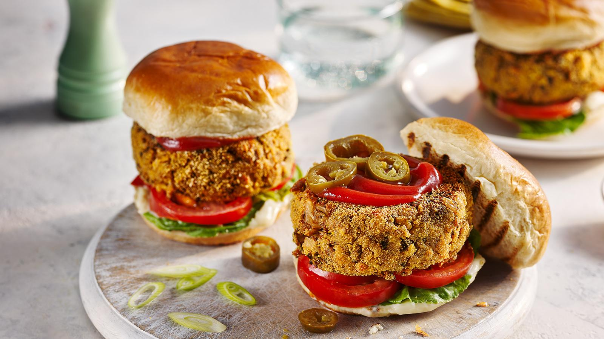

Home Page

Description
The ultimate veggie burger, according to food writer, Hattie Ellis. With bags of savoury flavour and a firm texture, these chunky veggie burgers are a long way from the discs of fake flavours often found in bought veggie burgers.
Ingredients
- 225g/8oz block smoked tofu
- 30g/1oz dried mushrooms
- 1 tbsp vegetable oil, plus 1 tbsp for frying burgers
- 300g/10½oz mushrooms, finely chopped
- 1 red onion, finely chopped
- 1 tsp yeast extract, such as Marmite
- 2 tsp soy sauce
- 225g/8oz halloumi, coarsely grated
- 100g/3½oz cooked brown rice
- 70g fine dry breadcrumbs
- 3 tbsp plain flour
- 1 tsp onion, garlic powder or seaweed flakes (optional)
- 1 large free-range egg, beaten
- polenta or cornmeal, for coating
- salt
Steps
- First, firm up the tofu. Wrap the block in a double sheet of kitchen paper, place a plate on top and weigh down with a weight (such as a tin of tomatoes); put in the fridge for at least 1 hour.
- Meanwhile, soak the dried mushrooms in hot water for 30 minutes to 1 hour. Drain, squeezing out as much liquid as you can — reserve it to use in a soup or sauce. Finely chop the soaked mushrooms.
- Heat the oil in a pan over a medium–high heat. Add the fresh mushrooms, onion and a pinch of salt and fry for about 15 minutes, stirring occasionally, until they release their water and start to brown.
- Meanwhile, roughly chop half the tofu and finely chop the other half.
- Blend half of the fried mushroom mixture with the roughly chopped tofu and yeast extract in a food processor until very finely chopped. Tip into a large bowl and add the soy sauce, halloumi, rice, breadcrumbs, flour and onion or garlic powder (or seaweed), if using. Mix thoroughly, taste and add more salt if necessary. Mix in the egg.
- Form into six equal balls and press the mixture together firmly in your palms to flatten slightly. Put the burgers in the fridge, covered, overnight.
- When you are ready to cook, sprinkle the polenta or cornmeal onto a plate. Press the burgers into firmer, flatter shapes and dip in the polenta or cornmeal to coat on both sides. Use your hands to form them into neat shapes as you coat, so they hold together well and cook evenly.
- To serve, slice the burger buns in half. Spread with butter or drizzle oil over the cut halves and place, cut-side down, in a large frying pan (or on a griddle or barbecue), until lightly crisp and patched with brown. Keep an eye on them as they brown quickly.
- Heat 1 tablespoon of oil in the pan and fry the burgers over a medium–high heat for about 3 minutes on each side, pressing down with a spatula, until browned on the outside and heated all the way through. Turn and cook for 1 minute more on the first side.
- Serve in the burger buns with your choice of salads and sauces.